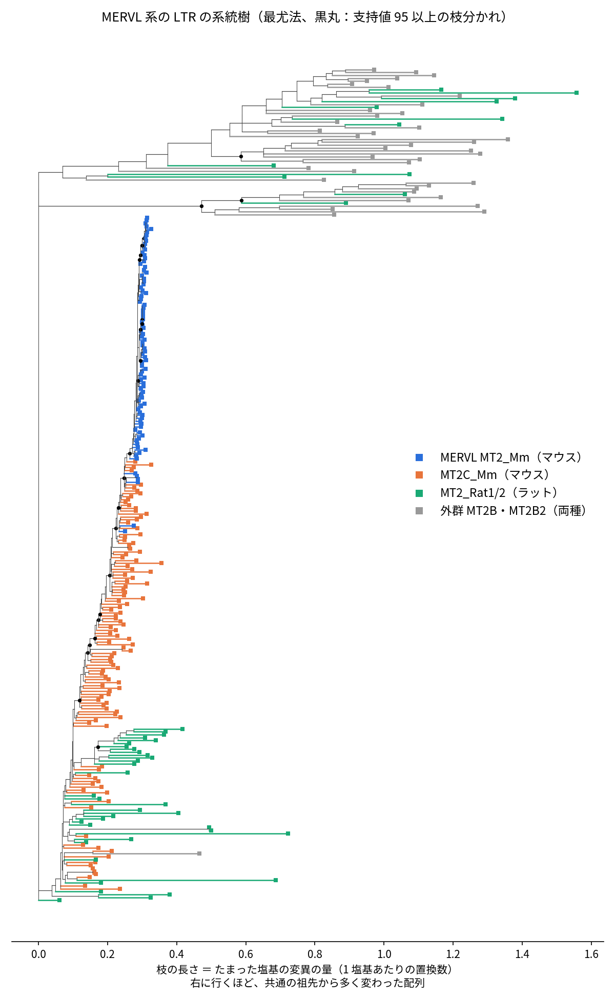
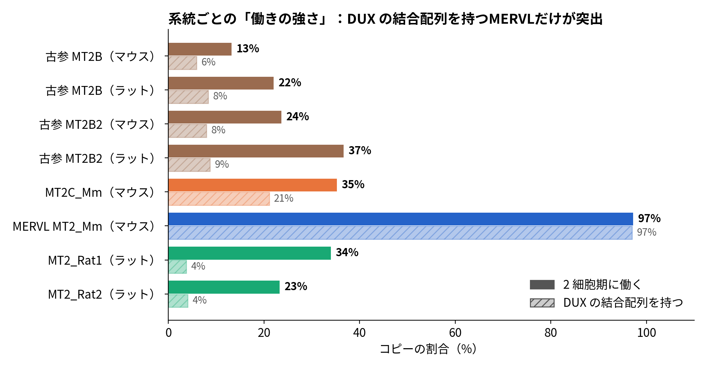
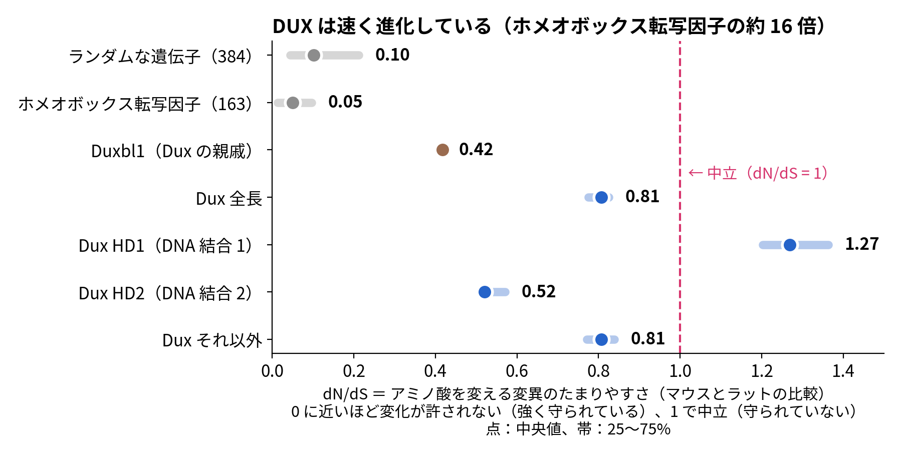
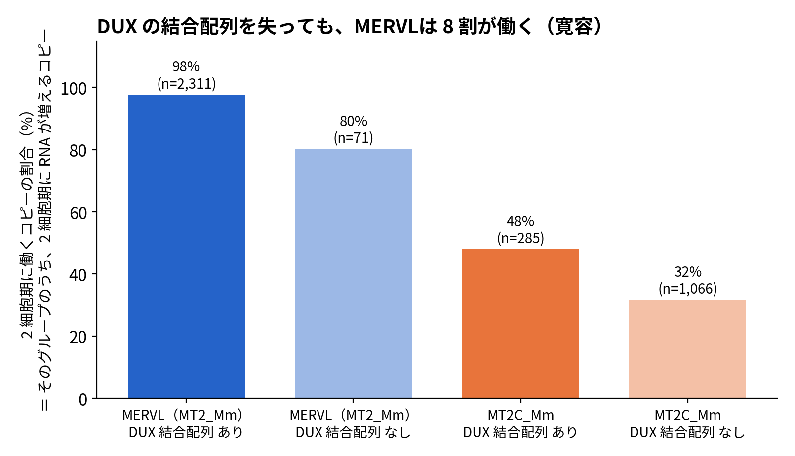

MERVL は MT2C_Mm の家系から生まれ、DUX の結合配列を得て一気に増えた
新しい主役 MERVL はどこから来たのか。外から入ってきたのか、マウスにいた家系から生まれたのかを、LTR の系統樹で調べました。あわせて、入れ替わりが許される条件（速い進化と寛容）も見ました。
MERVL は、マウスにいた MT2C_Mm と同じ家系の幹の先から生まれた。DUX の結合配列は MERVL の直前で急に現れ、その後にコピーが一気に増えた。


どう解析したか
- MT2C_Mm・MERVL（MT2_Mm）・ラットの MT2_Rat1/2 から代表コピーを選び、外群に MT2B・MT2B2 を加えて MAFFT で並べた。
- IQ-TREE で最尤法の系統樹を作り、外群で根を決めた。黒丸は支持値 95 以上の枝分かれ。
- 「MERVL と MT2C_Mm は別々の系統」という形に縛った樹と AU 検定で比べた。


コピー数の急増：MERVL の LTR（MT2_Mm）のコピーの約 9 割は、分岐度 0〜3% に集まっています。ごく最近、短い間に増えたことを示します。


どう解析したか
- 古参（MT2B・MT2B2、両種）、MT2C_Mm、MERVL、ラットの MT2_Rat1・MT2_Rat2 を並べ、それぞれ DUX の結合配列を持つコピーと働くコピーの割合を出した。
入れ替わりの条件
速い進化と寛容


どう解析したか
- Dux（と 1 つ目のホメオドメイン HD1）の配列を種のあいだで並べ、アミノ酸を変える変異と変えない変異の比（dN/dS）を出した。
- ほかのホメオボックス転写因子と、ランダムに選んだ遺伝子の dN/dS と比べた。


どう解析したか
- MERVL 系の LTR（MT2_Mm と MT2C_Mm）のコピーごとに、DUX の結合配列の有無と 2 細胞期に働くかを数えた。
若い MERVL は配列がほぼ同じなので、「DUX の結合配列がない MERVL」の読みには、隣のよく似たコピーの読みが混ざっている可能性があります（データと注意）。
次の問い
DUX の結合配列を得たこと以外に、何が起きたのか
MT2C_Mm から MERVL への変化を、結合配列・本体の遺伝子・抑制の目印まで広げて比べました。次のページ（⑤ スイッチの乗り換え）です。